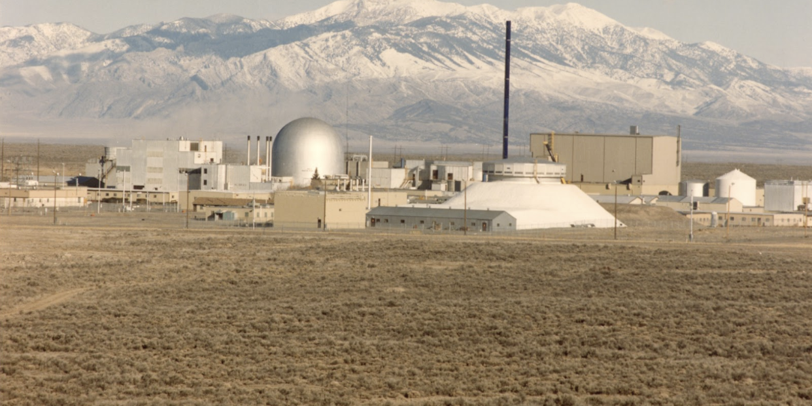

First advanced nuclear reactor is operating
The Argonne-West site in Idaho, a primary site for testing and demonstrating advanced nuclear reactor components and designs. The silver dome in the photo is Experimental Breeder Reactor II. (Image by Argonne National Laboratory)
Several innovative companies plan to build their first advanced nuclear power plants in North America between 2025-2030. Unlike conventional light water nuclear power reactors, these advanced nuclear reactors don’t use water to absorb the heat generated by nuclear reactions. Instead, they use an unreactive gas, molten salt, or liquid metal (e.g. sodium) for cooling inside the nuclear reactor. Advanced nuclear reactors are exciting because they offer greater passive safety, cost less to build (at maturity), produce less waste, and can produce high-temperature heat for industrial processes.
A few advanced, sodium-cooled fast reactors are currently operating in Russia, China, and India. Russia and China have plans to build others in the next decade, and China is also constructing a high-temperature gas-cooled reactor. In the U.S. and Canada, several small modular reactor (20-300 megawatts) and microreactor (< 20 megawatts) companies plan to use modular construction techniques and new designs to increase safety and reduce the cost of light water reactors and advanced reactors.
Nuclear reactor companies to watch in this space:
- Sodium-cooled advanced reactor companies: Terrapower*, Advanced Reactor Concepts (ARC) Energy, Oklo*, Space Nukes
- Gas-cooled advanced reactor companies: X-Energy*, General Atomics, USNC, Urenco, and Radiant Energy
- Molten salt cooled advanced reactor companies: Southern Company, Kairos, Terrestrial Energy, Moltex, Flibe Energy, HolosGen
- Small light water reactor companies: GE Hitachi, Nu-Scale
*indicates the company has announced plans for a commercial plant that will come online in the 2025-2030 timeframe